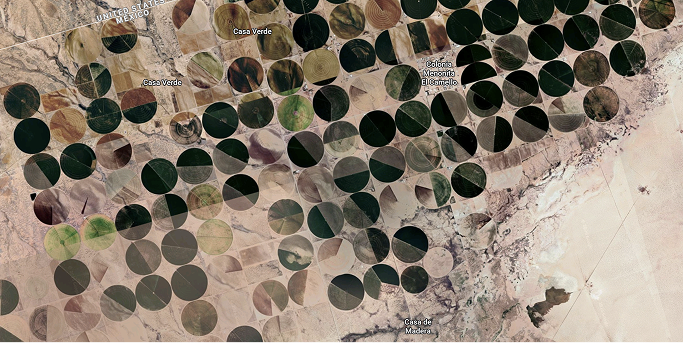
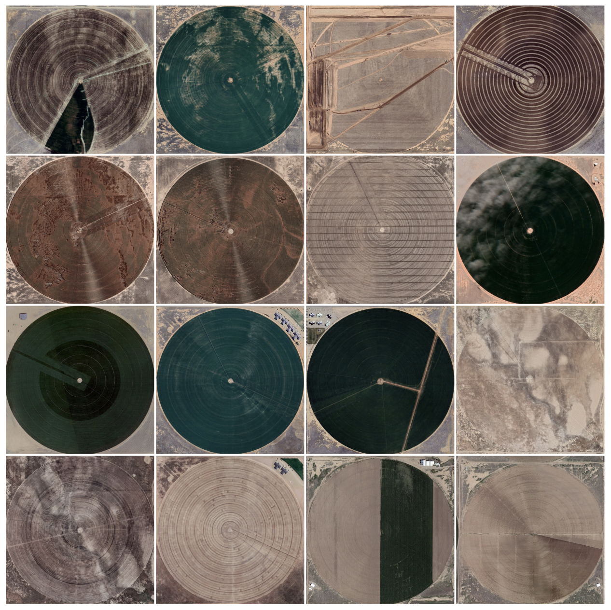

Valentina Herrera
@valentinaherrera.xyzThis was the result of an exploration through the frontier deserts between Mexico and the USA. What I first thought was a weird glitch of dots in the mountains turned out to be a bigger story: hundreds of circular fields made by Mennonite farmers in Chihuahua. Desert mountains full of perfectly circular fields, some filled with greenery, others dry from what seemed to be more than just one dry season.
This dataset began from the excitement of finding fields so visually impressive, so perfect, and so numerous. It was perfect for class: clear, consistent, and with lots and lots of the same kind of data. I began by taking high-resolution screenshots of as many circles as I could frame in one shot, then started saving screenshots of the same regions across different years from the Google Earth archive. You could see the seasons change, you could also see the lands get more populated with circles, and with the years, more circles drying out.


This dataset opened up a lot of conversations, through friends, family, and further research, it helped me understand what this small collection of images actually meant, the story behind it. It turns out Mennonite communities have been implementing modern agro-industrial practices in the desert of Chihuahua, creating "micro-oases" in the middle of dry land: drilling deep wells and depleting underground aquifers in the process. Water shortages in the area have become so severe that Mennonite families have started abandoning their farmland to search for wetter land elsewhere in Latin America.
In a course about handmade datasets, where the conversation turned to water usage, data centers, and the destruction of land and displacement of local communities in the name of "optimization" and "efficiency," this project became a historical reference for a very similar problem. The satellite images become an archive, a historical referent for what could happen next. What happens when the place a data center was built on is no longer usable, has no water left? What happens when ongoing projects for new ones get cancelled by public demand? Who takes care of the reforestation? Who gives us our land back as it was? I think this data holds the answers, and I hope we can fight for different ones.